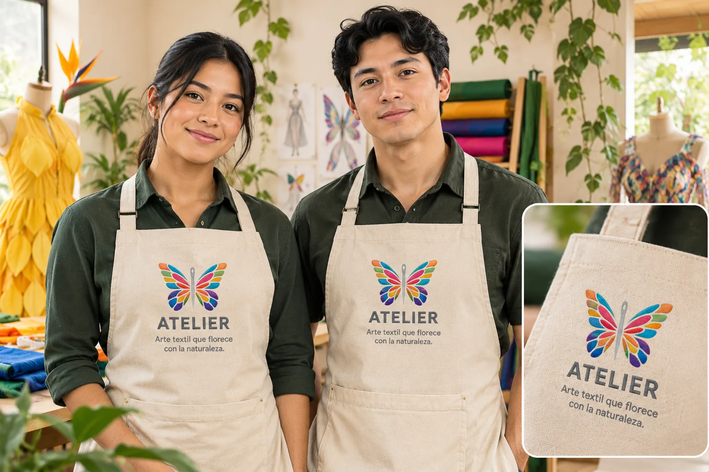
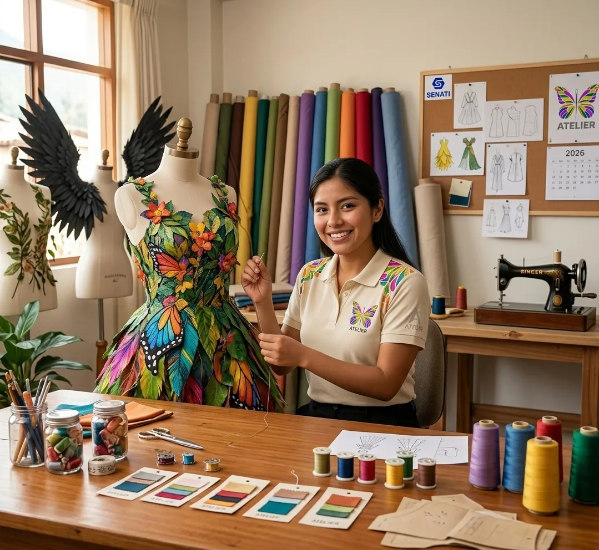
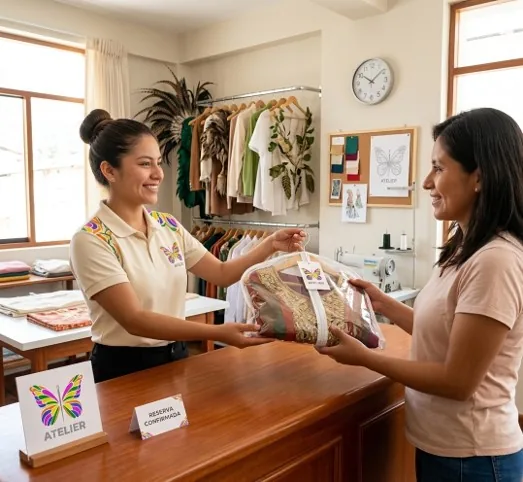
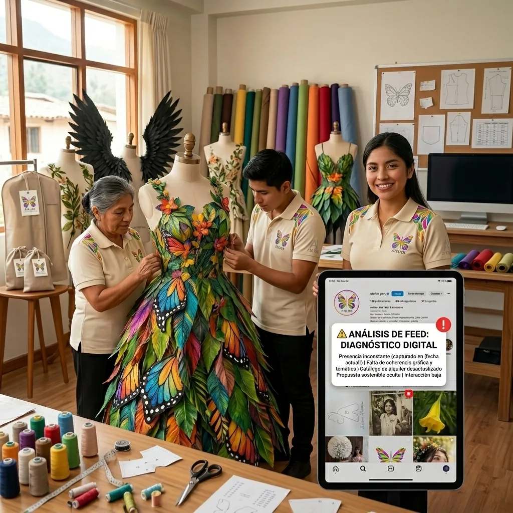

Atelier
Una marca que une arte, naturaleza y diseño textil.
Atelier S.A.C. diseña y alquila disfraces elaborados y vestidos temáticos inspirados en la naturaleza de la Selva Central.

Una marca que une arte, naturaleza y diseño textil.
Vestuario temático, disfraces artísticos y accesorios.
Av. Julián Ñaupari s/n, Satipo, Junín, Perú.

Ofrecemos alquiler por horas o días de trajes artísticos con alas articuladas de mariposas y aves, vestidos inspirados en flores silvestres, prendas de ecodiseño y accesorios como coronas y tocados.
Las piezas están pensadas para sesiones fotográficas, eventos, experiencias turísticas y creación de contenido.
La brújula que orienta cada diseño y cada experiencia.
Diseñar y alquilar vestidos, disfraces artísticos y piezas de ecodiseño de alta calidad en Mazamari, ofreciendo una experiencia única, cómoda y mágica para los eventos de nuestros clientes.
Consolidarnos como la marca líder en trajes de fantasía y ecodiseño en Mazamari, destacando a nivel regional por creatividad, respeto por la naturaleza y proyección cultural.
Desliza para conocer el trabajo diario.



Cinco ejemplos por valor, con su espacio para la imagen.